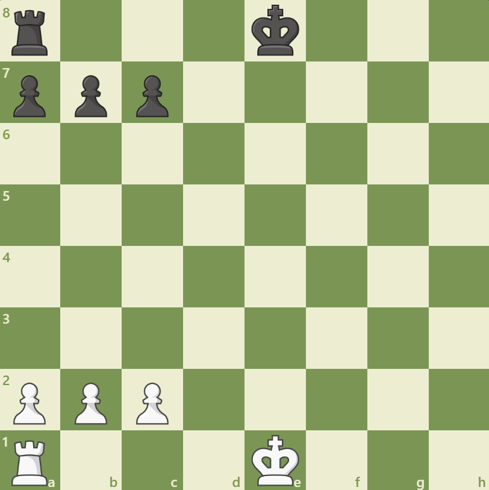
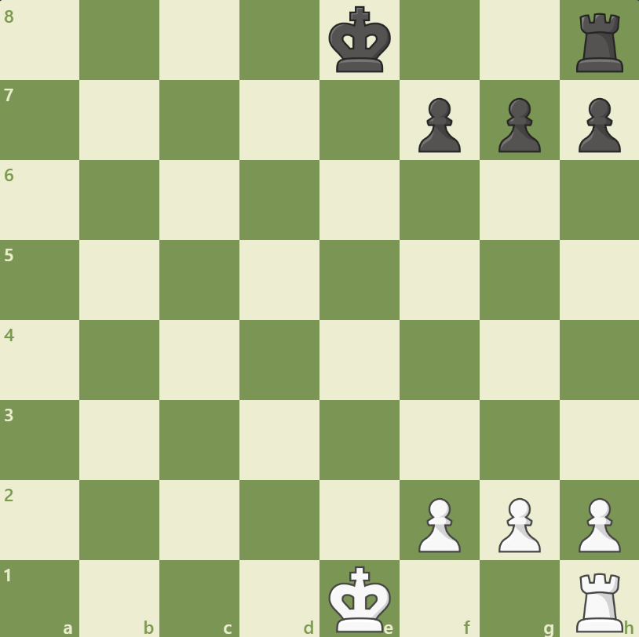

Castling
Castling is the only time in chess that two pieces can move at once, and the only time a piece other than the knight can move over another piece. To castle, simply move the king two spaces to the left or right and the rook moves next to the King depending on the side you are Castling.
Here are the rules for castling:
• Your king can not have moved- Once your king moves, you can no longer castle, even if you move the king back to the starting square. Many strategies involve forcing the opponent’s king to move just for this reason.
• Your rook can not have moved- If you move your rook, you can’t castle on that side anymore. Both the king and the rook you are castling with can’t have moved.
• Your king can NOT be in check- Though castling often looks like an appealing escape, you can’t castle while you are in check! Once you are out of check, then you can castle. Unlike moving, being checked does not remove the ability to castle later.
• Your king can not pass through check- If any square the king moves over or moves onto would put you in check, you can’t castle. You’ll have to get rid of that pesky attacking piece first!
• No pieces can be between the king and rook- All the spaces between the king and rook must be empty. This is part of why it’s so important to get your pieces out into the game as soon as possible!
Queenside Castling
When the color you want to castle is a the bottom of the board,
then the king moves 2 square to the left and the rook goes on its right
Kingside Castling
When the color you want to castle is a the bottom of the board,
then the king moves 2 square to the right and the rook goes on its left